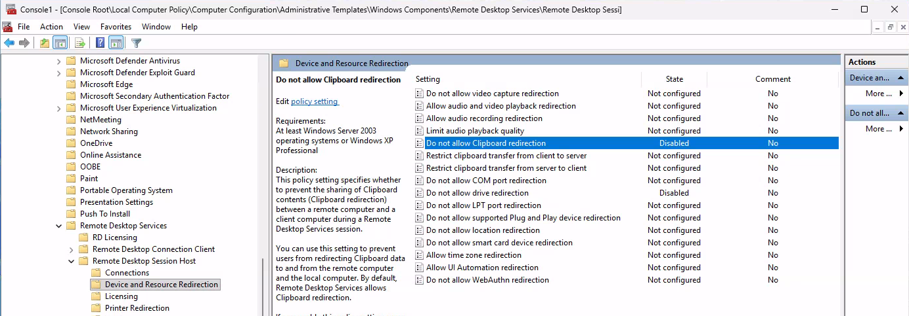

Why Copy & Paste seems to be broken on new Windows 365 CloudPCs and AVD Deployments (And How to Fix It)

If you recently deployed Windows 365 Cloud PCs or Azure Virtual Desktop (AVD) and suddenly noticed that copy and paste no longer works, you are not alone. In many environments, clipboard redirection and other client redirections worked perfectly in the past—but appear to be broken on newer deployments.
This blog post explains what is happening, why it changed, and how to fix it for both AVD and Windows 365.
The Issue
On newer Windows 365 Cloud PCs and AVD session hosts, the following features may not work:
- Copy & Paste (clipboard redirection)
- Drive redirection
- Printer redirection
- Other RDP client redirections
What makes this confusing is that:
- Older host pools and Cloud PCs often work without any changes
- The issue only affects newer deployments
- Nothing appears to be misconfigured at first glance
This leads many admins to believe something is broken—when in fact, this behavior is now by design.
The Root Cause
Microsoft introduced a new default configuration for AVD host pools.
Because Windows 365 is internally built on Azure Virtual Desktop, this change also affects:
- New AVD host pools
- New Windows 365 provisioning policies
What Changed?
With the new default configuration:
- Client redirections are disabled by default
- This includes clipboard (copy & paste) and other common RDP redirections
As a result:
- Older host pools (created before the change) still work as expected
- New host pools and new Windows 365 Cloud PCs inherit the new, more restrictive defaults
Microsoft’s intention is to provide a more secure baseline configuration, but this change is not always obvious—especially when comparing old and new environments.
The Solution
The good news: nothing is broken, and the fix is straightforward.
You simply need to explicitly enable the required redirections.
Solution for Azure Virtual Desktop (AVD)
For AVD, client redirections are controlled via the RDP Properties on the host pool.
Steps:
- Go to the Azure Portal
- Navigate to Azure Virtual Desktop → Host pools
- Select your host pool
- Open RDP Properties
- Enable the required redirections, such as:
- Clipboard redirection
- Drive redirection
- Printer redirection
- Save the changes
After refreshing the Windows App, users can immediately use copy and paste and other redirections again.
Solution for Windows 365
Windows 365 does not expose RDP properties in the same way as AVD. Instead, redirections are controlled differently on the Cloud PC.
You can configure this in multiple ways:
Local Group Policy
Enable the required policies locally on the Cloud PC (for example, clipboard and device redirection policies). Note: Disable the disable to enable ;-)

Microsoft Intune (Recommended)
For scalable and consistent management, use Microsoft Intune:
- Create a Settings Catalog or Administrative Templates policy
- Enable the desired RDP and redirection-related settings
- Assign the policy to your Windows 365 devices
After the policy is applied, copy & paste and other redirections work again.
Others
You can modify the registry by using scripts.
Key Takeaways
- Copy & Paste issues on Windows 365 and AVD are usually not a bug
- Microsoft changed the default host pool configuration
- New deployments have client redirections disabled by default
- Explicitly enabling redirections resolves the issue
If you are rolling out new Cloud PCs or host pools, make sure to review and adjust the redirection settings early to avoid confusion for end users.